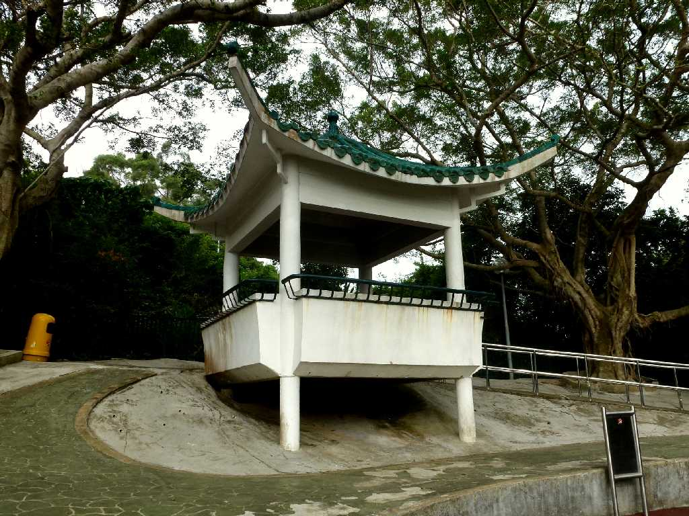
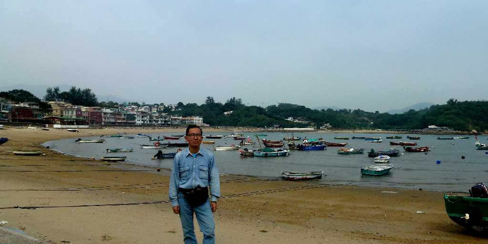
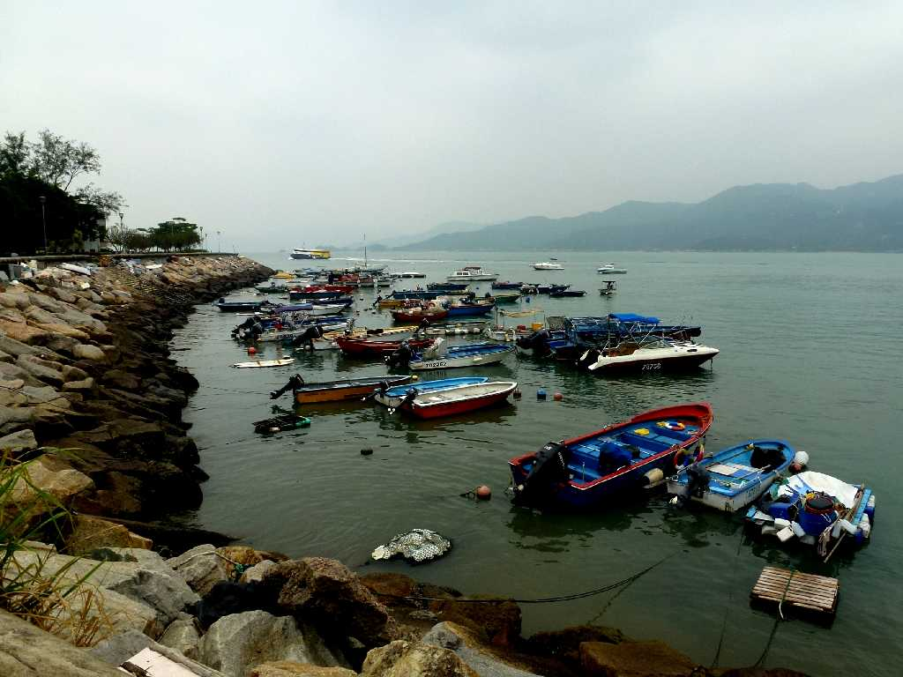
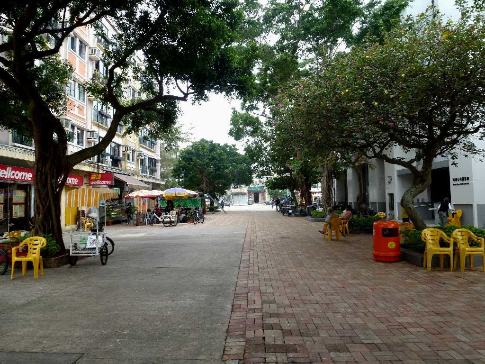
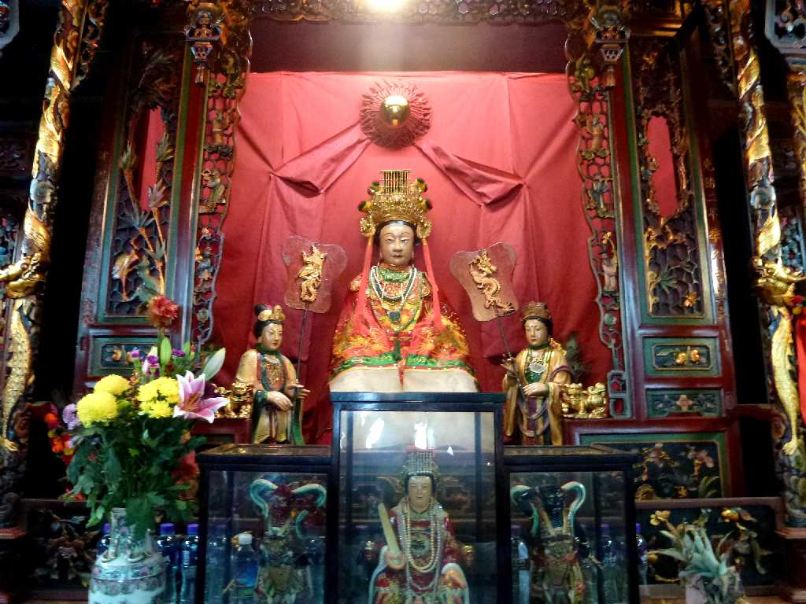
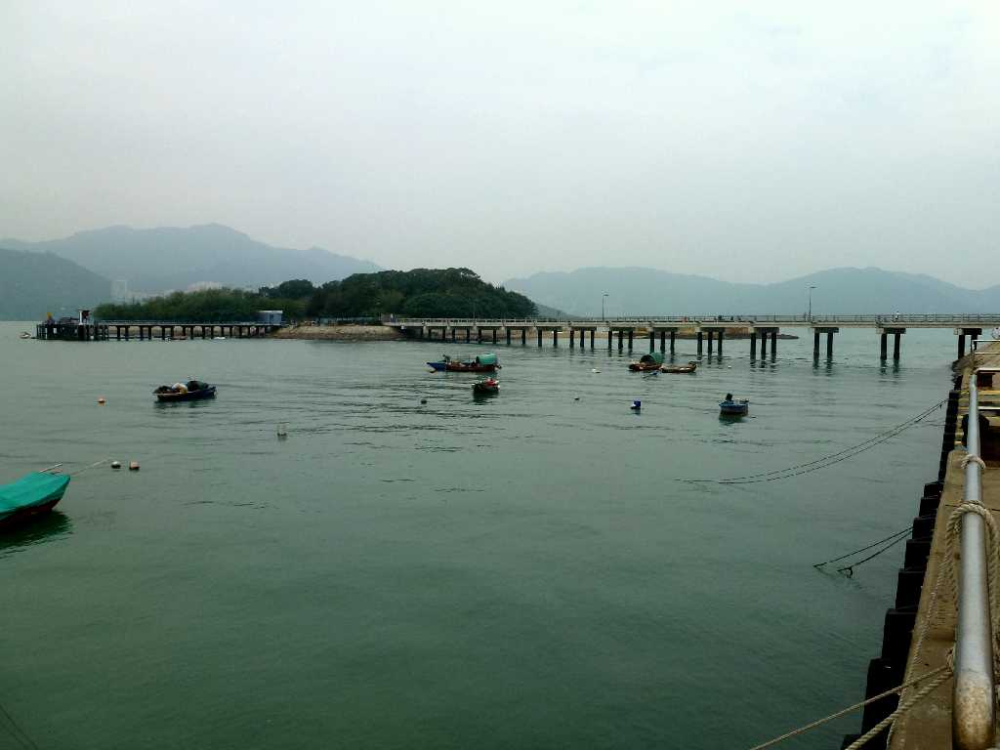

Tung Wan Peng Chau Island Hong Kong 香港 坪洲島 東灣
南部散策路指手山見晴台から東灣を望む

Finger Hill Pavilion Peng Chau Island 指手山亭

November 19 2012 Tung Wan Peng Chau Island

Pier Peng Chau Island

Central Peng Chau Island

Tin Hau Temple Peng Chau Island

Tai Lei Peng Chau

View Siu Kau Yi Chau from Peng Yu Path Peng Chau